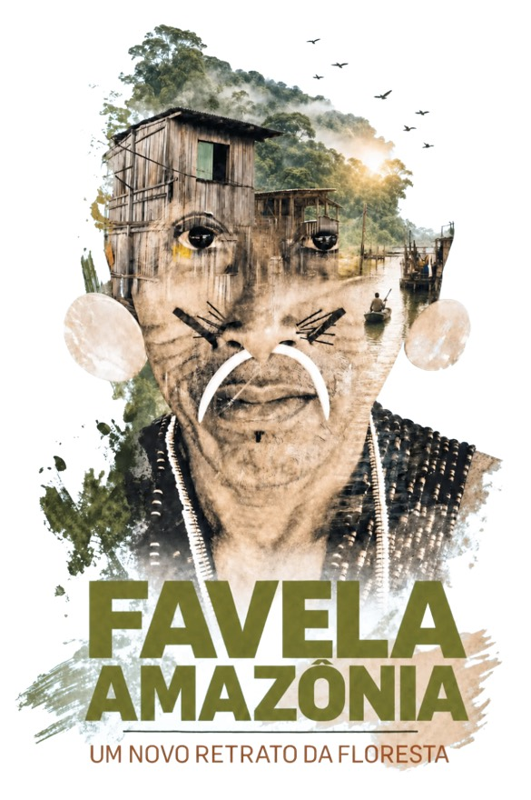
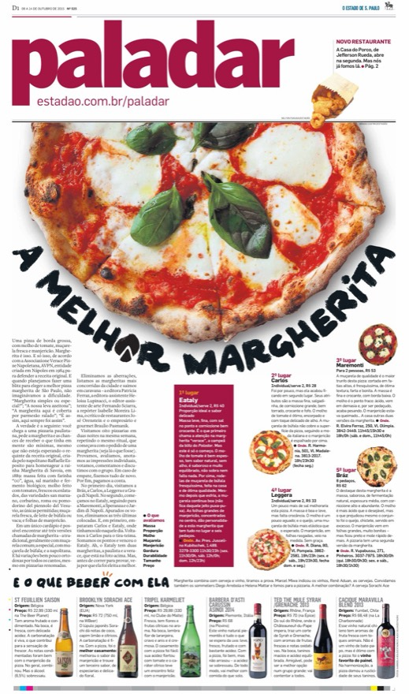
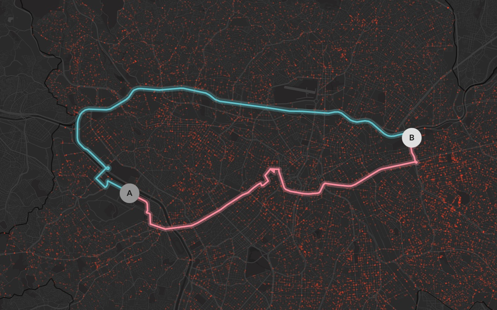
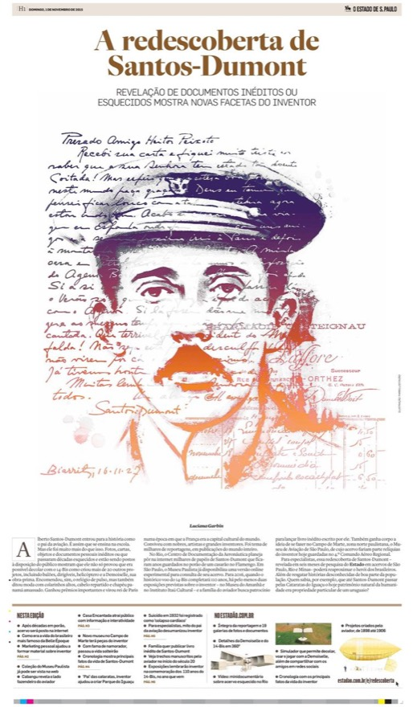
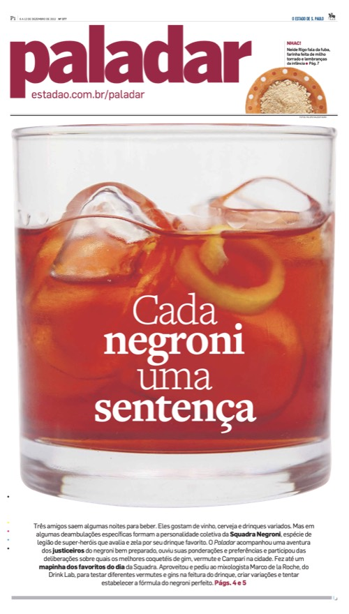
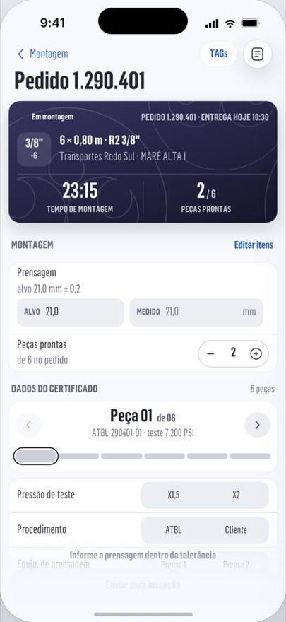
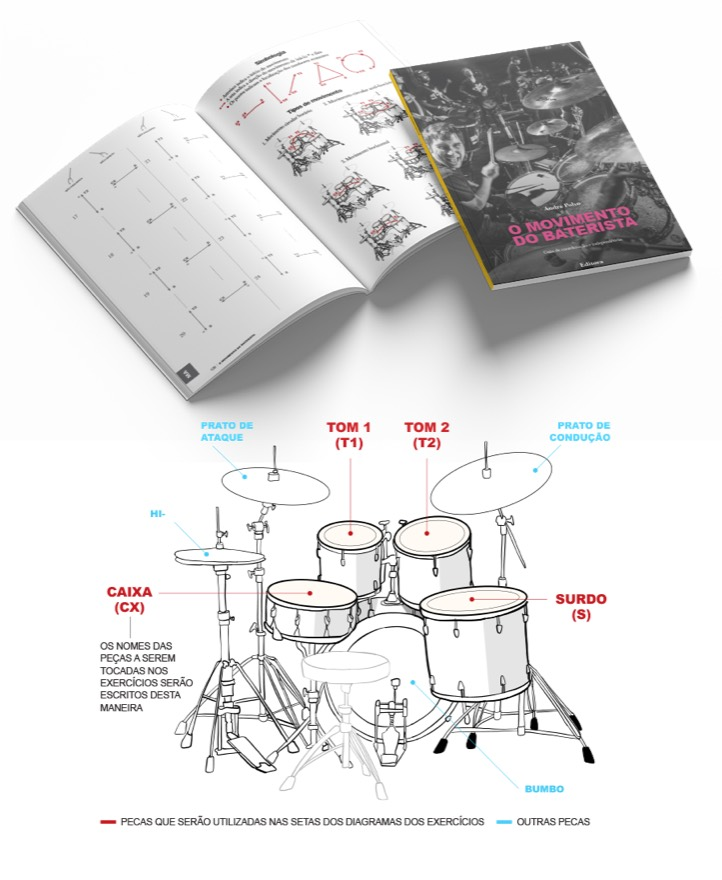
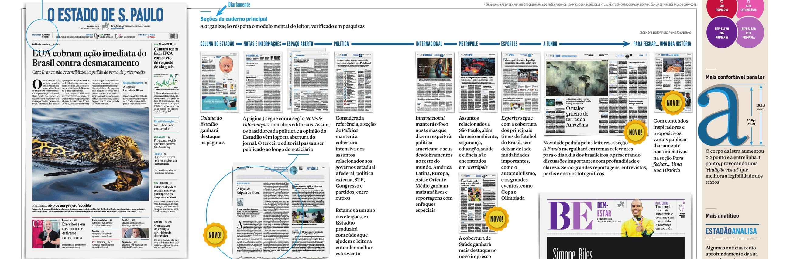

I design complex products and build them. At ATBL I design and program the apps the company runs on: shipping, the hose workshop, stock and counter sales, all tied to the ERP. I also help run the company.
Before that I spent two decades leading art and graphics teams at Estadão, Correio Braziliense, and Diário de Notícias. The job was the same in another medium: make something complicated easy to read.


Now · ATBL
The apps a company runs on
Shipping, workshop, and stock, designed and programmed by me. Three screens here; the case study shows all eight.
- 6,359
- Deliveries recorded since July 2024
- 97%
- Of confirmed deliveries have the proof of delivery attached
- 9,269
- Hoses completed in the workshop since February 2025
- 26,484
- Active products in the catalogue


Shipping
Proof of delivery, photographed
The driver photographs the signed receipt, and it goes back to the ERP attached to the invoice.
Workshop
The certificate, straight from the assembly
The test certificate is generated from what was recorded during assembly and inspection, ready to print.
Stock
Every product has an address
On arrival, each item is scanned to a shelf position. The location is written to the product record.
Estadão
A daily newspaper redesigned as a system
I led the redesign across editorial, production, and advertising. Its business case estimated a R$7 million increase in EBITDA in 2022.

Graphics desk
Two decades of visual journalism came before the apps. The newsroom is where I learned to be rigorous with information and to design systems for a large audience, on a daily deadline. This is work made with the teams I led, from the printed page to digital specials.
Tapuiassauro
From fossil fragments to a hypothesis you can see
Gold medal at Malofiej in 2011. Fragments, measurements, and scientific inference turned into something a reader can see.
Favela Amazônia
Portrait of a New Forest
Winner of the Inter American Press Association (SIP) Award. A visual investigation into urbanization in the Amazon rainforest, balancing atmosphere, evidence, and complexity without sensationalism.
View on estadao.com.br
Malofiej distinctions
Five distinctions at Malofiej, the international information-design awards often described as the “Oscars of Infographics”.
Tools
The tools behind the pages
A graphics desk publishes faster when designers don’t have to wait for a developer. I designed and programmed the tools that made that possible at Estadão, and this site runs on the same idea.
- Uva Pages 2.0
- A visual-story editor for the newsroom, fully optimized to work directly from a Google Docs document. Since 2023, every story published by Estadão’s multimedia team has been made with it.
- ai2html and Uva Charts
- The route from an Illustrator file to a responsive graphic on the web, set up as a standard process for the art team. Development carried out by the team under my supervision.
- This site’s editor
- The same notation, with a live preview and publishing to GitHub from a phone.
Where the work happened, and what it earned
2021 Aberje Media of the Year, for the newspaper’s new format
Experiments
fab.IA asks ERP data questions by voice, built with Svelte, Node.js, and D3.js.
In addition, two earlier experiments I would highlight:
• Personalized news recommendations
• Reading designed for touch
Read the personalization case study
Read the interaction design case